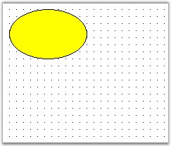
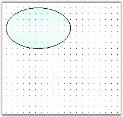
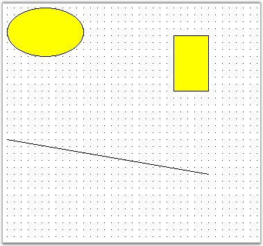

Diagram control supports a lot of different kind of nodes. The following are the nodes that are supported by the Diagram control.
· TextNode
· Shape
· Symbol
· ControlNode
· PathNode
· BitmapNode
· RichTextNode
· MetafileNode
· Group
· PseudoGroup
· FilledPath
· FilledShape
· RoundRect
· PolygonA
· Rectangle
· ClosedCurveNode
· Ellipse
· PolylineNode
· CurveNode
· Line
· SplineNode
· Arc
· BezierCurve
· MeasureLine
· Polyline
· OrthogonalConnector
· LineConnector
· OrthogonalLine
· Link
· PolyLineConnector
Creating a Node in diagram control at run time
1. For creating a node, drag a diagram control onto the windows form.
2. Press F7 key to open the *.cs file. Enter the following code in the Page_Load function.
|
[C#]
private void Form1_Load(object sender, EventArgs e) { Syncfusion.Windows.Forms.Diagram.Ellipse ellipse = new Syncfusion.Windows.Forms.Diagram.Ellipse(10, 10, 110, 70); diagram1.Model.AppendChild(ellipse); } |
|
[VB]
Private Sub Form1_Load(ByVal sender As Object, ByVal e As EventArgs) Dim ellipse As New Syncfusion.Windows.Forms.Diagram.Ellipse(10, 10, 110, 70) diagram1.Model.AppendChild(ellipse) End Sub |

Figure 33: Diagram with Node Sample
Node Property Settings
Following is the code sample for Node property settings.
|
[C#]
private void Form1_Load(object sender, EventArgs e) { Syncfusion.Windows.Forms.Diagram.Ellipse ellipse = new Syncfusion.Windows.Forms.Diagram.Ellipse(10, 10, 110, 70); diagram1.Model.AppendChild(ellipse); ellipse.FillStyle.Color = System.Drawing.Color.AliceBlue; ellipse.FillStyle.ColorAlphaFactor = 100; ellipse.FillStyle.ForeColor = System.Drawing.Color.Aquamarine; ellipse.FillStyle.ForeColorAlphaFactor = 70; ellipse.FillStyle.Type = FillStyleType.PathGradient; ellipse.FillStyle.PathBrushStyle = PathGradientBrushStyle.RectangleCenter; ellipse.FillStyle.Type = FillStyleType.LinearGradient; ellipse.FillStyle.GradientAngle = 95; ellipse.FillStyle.GradientCenter = 0.5f;
ellipse.EditStyle.AllowChangeHeight = true; ellipse.EditStyle.AllowChangeWidth = true; ellipse.EditStyle.AllowDelete = false; ellipse.EditStyle.AllowMoveX = true; ellipse.EditStyle.AllowMoveY = false; ellipse.EditStyle.AllowRotate = false; ellipse.EditStyle.AllowSelect = true; } |
|
[VB]
Private Sub Form1_Load(ByVal sender As Object, ByVal e As EventArgs) Dim ellipse As New Syncfusion.Windows.Forms.Diagram.Ellipse(10, 10, 110, 70) diagram1.Model.AppendChild(ellipse) ellipse.FillStyle.Color = System.Drawing.Color.AliceBlue ellipse.FillStyle.ColorAlphaFactor = 100 ellipse.FillStyle.ForeColor = System.Drawing.Color.Aquamarine ellipse.FillStyle.ForeColorAlphaFactor = 70 ellipse.FillStyle.Type = FillStyleType.PathGradient ellipse.FillStyle.PathBrushStyle = PathGradientBrushStyle.RectangleCenter ellipse.FillStyle.Type = FillStyleType.LinearGradient ellipse.FillStyle.GradientAngle = 95 ellipse.FillStyle.GradientCenter = 0.5F
ellipse.EditStyle.AllowChangeHeight = True ellipse.EditStyle.AllowChangeWidth = True ellipse.EditStyle.AllowDelete = False ellipse.EditStyle.AllowMoveX = True ellipse.EditStyle.AllowMoveY = False ellipse.EditStyle.AllowRotate = False ellipse.EditStyle.AllowSelect = True End Sub |

Figure 34: Diagram With Node Property Settings
Creating Nodes and Links
The following code is used for creating nodes and links.
|
[C#]
protected void Page_Load(object sender, EventArgs e) { Syncfusion.Windows.Forms.Diagram.Ellipse ellipse = new Syncfusion.Windows.Forms.Diagram.Ellipse(10, 10, 110, 70); Syncfusion.Windows.Forms.Diagram.Rectangle rectangle = new Syncfusion.Windows.Forms.Diagram.Rectangle(250, 50, 50, 80); Syncfusion.Windows.Forms.Diagram.LineConnector lineconnector = new Syncfusion.Windows.Forms.Diagram.LineConnector(new System.Drawing.PointF(10, 200), new System.Drawing.PointF(300, 250)); this.diagram1.Model.AppendChild(ellipse); this.diagram1.Model.AppendChild(rectangle); this.diagram1.Model.AppendChild(lineconnector); } |
|
[VB]
Protected Sub Page_Load(ByVal sender As Object, ByVal e As EventArgs) Dim ellipse As New Syncfusion.Windows.Forms.Diagram.Ellipse(10, 10, 110, 70) Dim rectangle As New Syncfusion.Windows.Forms.Diagram.Rectangle(250, 50, 50, 80) Dim lineconnector As New Syncfusion.Windows.Forms.Diagram.LineConnector(New System.Drawing.PointF(10, 200), New System.Drawing.PointF(300, 250)) Me.diagram1.Model.AppendChild(ellipse) Me.diagram1.Model.AppendChild(rectangle) Me.diagram1.Model.AppendChild(lineconnector) End Sub |

Figure 35: Diagram with node and Link